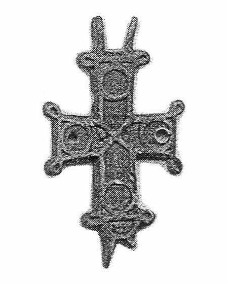

Catalog › CE-0533 · IAH2007-2-1
Valvă de encolpion nefinisată, Horodîșce (Рис. 2, 1)
nedatat · Horodîșce, regiunea Ternopil, raionul Zboriv, Ucraina
single valve of a reliquary cross; nedatat; found at Horodîșce, regiunea Ternopil, raionul Zboriv, Ucraina.


Identificare
- Categorie
- Valvă izolată
- Tehnică
- Turnare în relief
- Dimensiuni
- Î 71 × L 39 mm
Iconografie
- Revers
- Ornament geometric
- Descriere revers
- Valva inferioară a unui encolpion neterminat, cu brațe inegale și capete ușor lărgite. Pe contur, o bandă fină în relief, care formează bucle ornamentale în unghiurile brațelor. Ornament geometric: la încrucișarea brațelor o cruce oblică scurtă, pe capete medalioane circulare, unghiurile exterioare ale crucii subliniate prin adâncituri triunghiulare, lângă perechea inferioară de urechi un semicerc. Adânciturile urmau să fie umplute cu emailuri de culori diferite; medalioanele brațului orizontal sunt deteriorate de găuri ulterioare.
Datare și atribuire
- Datare
- nedatat
Descoperire
- Localitate
- Horodîșce
- Regiune
- regiunea Ternopil, raionul Zboriv
- Țară
- Ucraina
- Context
- Necunoscut
- Coordonate
- 49.6633° N, 25.1425° E
- Precizia locului
- Doar localitatea
Păstrare și referințe
- Bibliografie
- М. Ягодинська, Нові культові речі з давньоруських пам’яток Західного Поділля, în „Матеріали і дослідження з археології Прикарпаття і Волині”, 11, 2007, p. 346–357 [Ягодинська 2007], p. 346–347, Рис. 2, 1, reprodusă la Рис. 2, 1 (p. 350).
- Figura
- Рис. 2, 1
- Planșe
- Ягодинська 2007, p. 350
- Analogii
- Encolpioane similare printre antichitățile bizantine din secolele VIII–X (Auction 177, 1993, pl. 67, nr. 1890); cruci de formă asemănătoare datate în anii 1220–1260 (Седова 1981, p. 53, fig. 17, 1–2; p. 58); encolpion analog din Halici, datat sec. XII–XIII (Лукомський, Петегирич 1998, p. 620, fig. 1; p. 621, fig. 2).
- Observații
- Dimensiuni 7,1×3,9 cm, fără ureche. Fața interioară are o adâncitură cruciformă pentru relicve, 2,0×1,5 cm. Autoarea nu dă o datare proprie piesei. Colecția piesei nu este precizată (fondurile muzeelor din Ternopil, Borșciv, Zalișcichi sau colecții particulare). Material: aliaj de cupru, fără precizare suplimentară. Coordonate: ale orașului Zboriv, centrul raionului (localitatea nu a putut fi localizată), aproximative, nu date în sursă.
Citare: Corpus Encolpiorum, CE-0533, Valvă de encolpion nefinisată, Horodîșce (Рис. 2, 1), https://vitaliejosanu1979-ux.github.io/primul-meu-proiect/piese/IAH2007-2-1/ (accesat 2026-10-17).